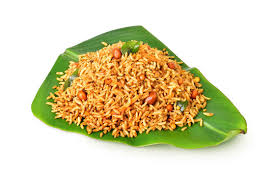

PULIHORA
Ingredients
The pulihora is prepared with kokum, tamarind, lemon or green mango as main souring ingredient,
along with a blend of spices, lentils, peanuts and jaggery cooked in oil and mixed with cooked rice along with fried curry leaves and turmeric.

Process
. Wash rice and dal together and take them in a pressure cooker. ...
pressure cook them for 3 whistle. Switch off the flame. ...
Now lets makes the tamarind paste. ...
Pour this tamarind pulp over the rice and mix well. ...
Pour this seasoning over the rice and mix well.
Serve hot with papad and pickle.
Back to home page